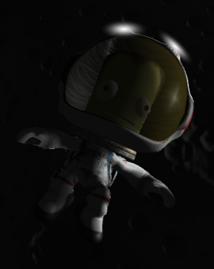

Mais sobre nossos indiotas
Kerbals são os habitantes nativos do planeta Kerbin e são análogos cartunescos da humanidade no jogo.
Kerbals não apresentam variação em altura ou peso. Eles têm aproximadamente 0,75 metros de altura Kerbals têm
cabeças enormes em relação ao corpo, com cerca de metade do seu volume total sendo representado pela cabeça.
Os olhos dos Kerbals se projetam significativamente da cabeça, assim como suas córneas.
Os Kerbals
parecem não ter íris, ou então são completamente pretos.
Eles também não possuem pálpebras e, como
resultado, não piscam.
